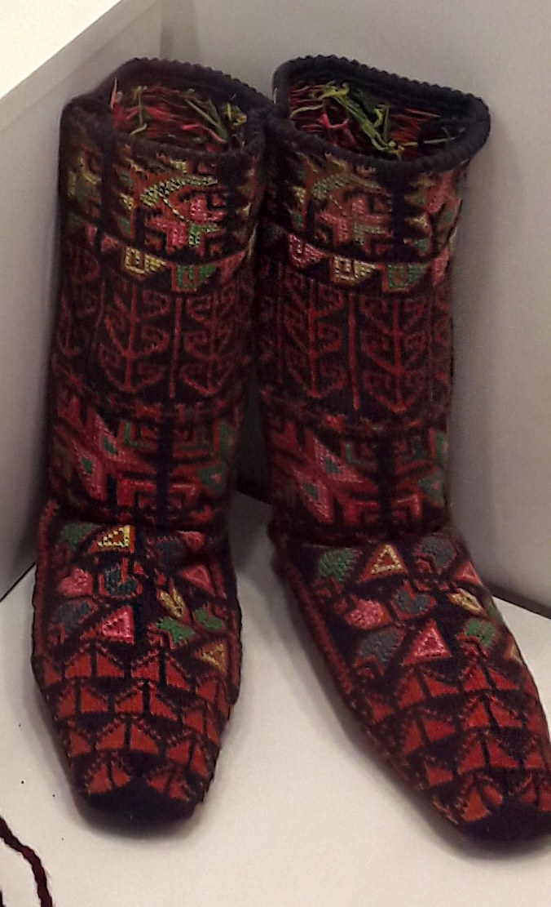
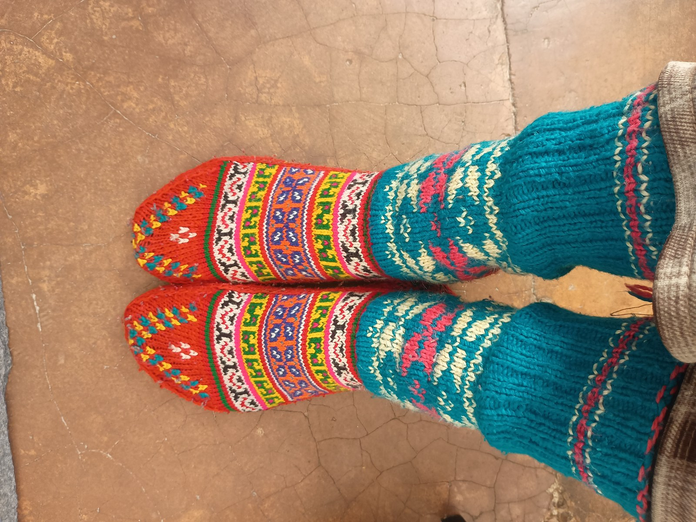

We knit socks that honor the stone cairns standing silent watch across alpine passes—unyielding, reliable, and guiding travelers through the wildest weather.
RibKnitCairn was conceived in the high country, where jagged granite trails test the limits of human footwear. For decades, hikers endured blistered heels, bunching arches, and toe seams that pinched cruelly inside heavy leather boots.
We realized that while boot technology had advanced with carbon shanks and waterproof membranes, socks remained an afterthought—mass-produced on low-needle cylinders with hollow synthetic threads.
We set out to build genuine foot armor. By returning to long-staple highland merino wool and reviving the lost art of true seamless hand-linking, we created socks engineered to navigate high mountain routes without failure.

Our wool originates from free-grazing flocks raised in extreme mountain climates, creating dense, crimped fleeces that naturally thermoregulate.
We wrap micro-denier nylon within pure merino yarn, ensuring uncompromised skin softness while increasing heel abrasion resistance tenfold.
By using high-density cylinders, we pack more loops per square centimeter, preventing dirt infiltration and retaining shape over hundreds of miles.
Every toe closure is linked loop-to-loop, eliminating fabric trim waste while providing a perfectly smooth, friction-free interior.

Wool is an extraordinary, renewable gift from nature. It is naturally biodegradable, requires no micro-plastic petrochemical inputs, and locks away atmospheric carbon throughout the sheep's lifecycle.
We strictly partner with growers verified by the Responsible Wool Standard (RWS), guaranteeing humane animal treatment, zero mulesing, and regenerative pasture rotation that restores native alpine soils.
Our atelier in New York maintains an open-door policy for mountain enthusiasts and textile scholars. Visit our studio at 181 Mercer Street, New York, NY 10012, United States or speak with our knitters at +1-888-777-5845.